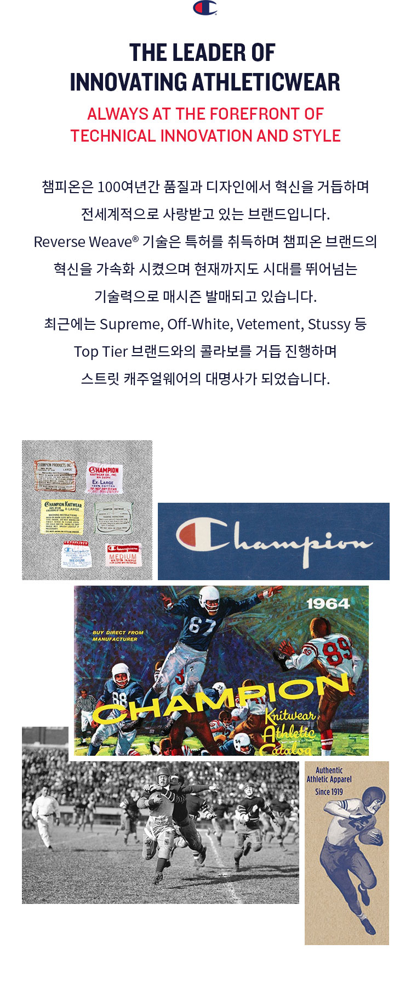
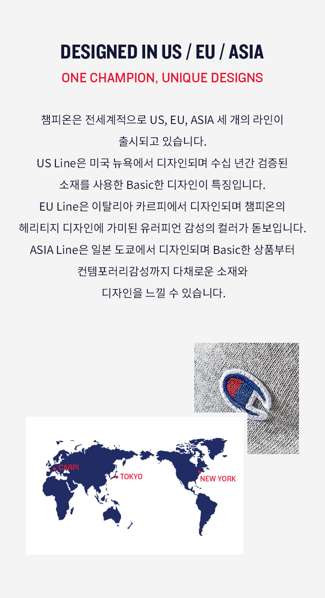
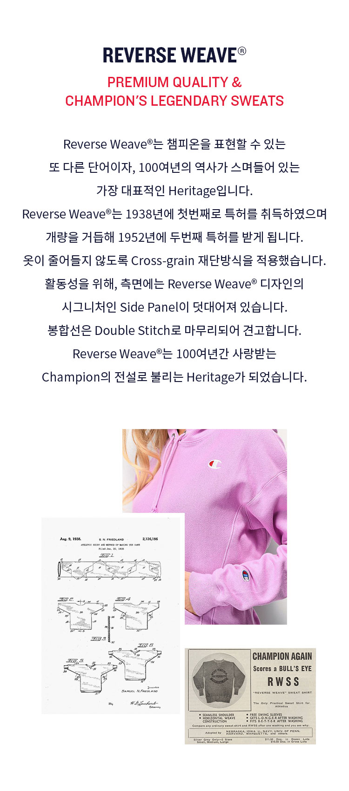
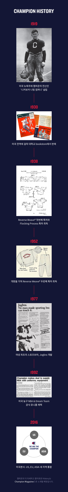

CHAMPION STORY

THE LEADER OF INNOVATING ATHLETICWEAR
ALWAYS AT THE FOREFRONT OF TECHNICAL INNOVATION AND STYLE
챔피온은 100여년간 품질과 디자인에서 혁신을 거듭하며 전세계적으로 사랑받고 있는 브랜드입니다.
Reverse Weave® 기술은 특허를 취득하며 챔피온 브랜드의 혁신을 가속화 시켰으며 현재까지도 시대를 뛰어넘는 기술력으로 매시즌 발매되고 있습니다.
최근에는 Supreme, Off-White, Vetement, Stussy 등
Top Tier 브랜드와의 콜라보를 거듭 진행하며
스트릿 캐주얼웨어의 대명사가 되었습니다.

DESIGNED IN US / EU / ASIA
ONE CHAMPION, UNIQUE DESIGNS
챔피온은 전세계적으로 US, EU, ASIA 세 개의 라인이 출시되고 있습니다.
US Line은 미국 뉴욕에서 디자인되며 수십 년간 검증된 소재를 사용한 Basic한 디자인이 특징입니다.
EU Line은 이탈리아 카르피에서 디자인되며 챔피온의 헤리티지 디자인에 가미된 유러피언 감성의 컬러가 돋보입니다.
ASIA Line은 일본 도쿄에서 디자인되며 Basic한 상품부터 컨템감성까지 다채로운 소재와 디자인을 느낄 수 있습니다.

Reverse Weave®
Premium Quality & Champion's Legendary Sweats
Reverse Weave®는 챔피온을 표현할 수 있는
또 다른 단어이자, 100여년의 역사가 스며들어 있는
가장 대표적인 Heritage입니다.
Reverse Weave®는 1938년에 첫번째로 특허를 취득하였으며 개량을 거듭해 1952년에 두번째 특허를 받게 됩니다.
옷이 줄어들지 않도록 Cross-grain 재단방식을 적용했습니다. 활동성을 위해, 측면에는 Reverse Weave® 디자인의 시그니처인 Side Panel이 덧대어져 있습니다.
봉합선은 Double Stitch로 마무리되어 견고합니다.
Reverse Weave®는 100여년간 사랑받는
Champion의 전설로 불리는 Heritage가 되었습니다.

champion HISTORY
- 1919
- 미국 뉴욕주에 챔피온의 전신인 '니커보커 니팅 컴퍼니' 설립
- 1930
- 미국 전역에 걸쳐 대학교 bookstore에서 판매
- 1938
- Reverse Weave® 첫번째 특허와 Flocking Process 특허 취득
- 1952
- 개량을 거쳐 Reverse Weave® 두번째 특허 취득
- 여성 최초의 스포츠브라, Jogbra 개발
- 1977
- 미국 농구 NBA & Dream Team 공식 유니폼 채택
- 1992
- 미국본사. US, EU, ASIA 세 지역 통합
- 2016
- 챔피온의 더 자세하고 흥미로운 History는 Champion Magazine으로 소개될 예정입니다.